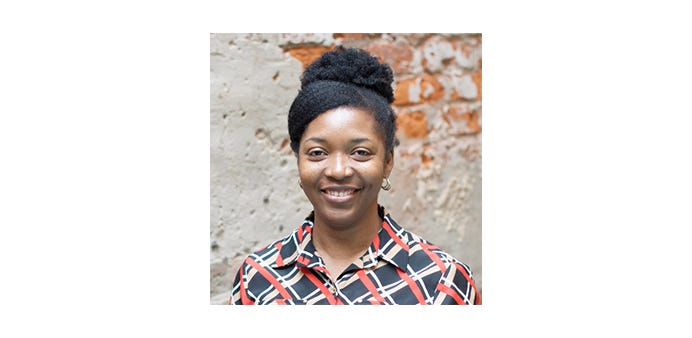

We spoke to Iris Ibekwe, CivicActions’ Associate Director of Front End Development about her work as Front End Lead on the National Science Foundation (NSF) modernization project, the importance of empowering the scientific community through her work on NSF, and how seeing CivicActions colleagues can feel “like a joyful reunion of friends.”

What is your job at CivicActions? How long have you been with the company?
I am currently a Front End lead on the National Science Foundation modernization project. I am also a Front End Associate Director at CivicActions. I have been a part of the company since August 2014 and it has been an exhilarating journey, working on different fulfilling projects and growing along with the company.
What is the most rewarding part of your job? Why is working with the National Science Foundation (NSF) meaningful to you?
The most rewarding part of my work is being able to make an impact on how government services are consumed by people from all over the country. I enjoy helping to improve the general public’s experience with interacting with government services. The project team values the importance of creating an accessible and engaging website.
The NSF supports a sizable portion of Science & Engineering research and it has had a significant impact on education, technology etc. facilitating breakthrough discoveries on various fronts. I derive satisfaction from contributing to the work that tells the NSF story, highlighting the remarkable technological advances they have supported. I also enjoy making it easier for the scientific research community, educators, students, and science-interested members of the public to find funding opportunities and resources for preparing and submitting funding proposals.
What do you find unique about the company culture at CivicActions?
We have been a remote company from the onset, creating unique virtual touchpoints and interactions that keep the team engaged and connected. I am always pleasantly surprised by how easily we engage with each other when we meet irl. In-person activities feel like a joyful reunion of friends.
The company values of balance, transparency, and care are genuinely reflected in day-to-day decisions and interactions. This is a place that puts these words into action, prioritizing team member welfare and operating with radical openness and transparency in how we work and collaborate with clients and partners. I am so proud we won a Comparably Award for the happiest employees. I can’t think of a better indicator of how amazing it is to show up to work on meaningful projects with a talented team of people you truly enjoy working with and in a company that is committed to providing an excellent work-life balance for its employees.